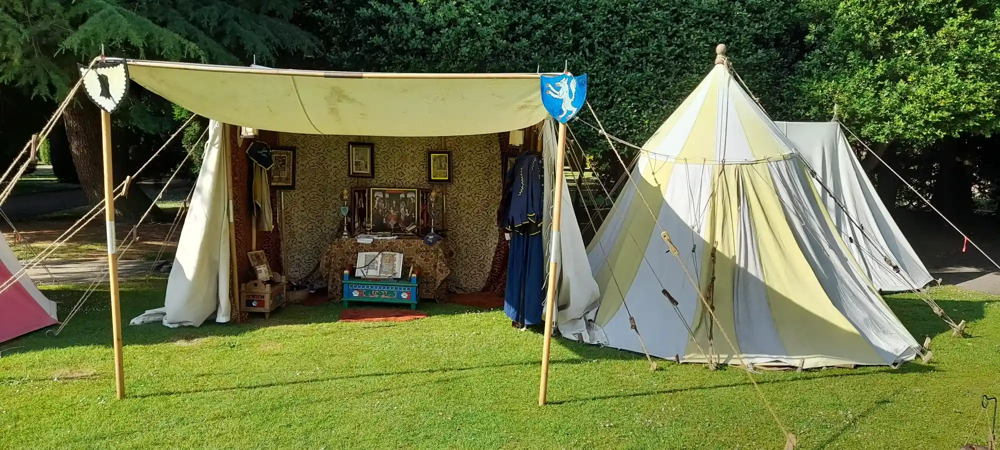
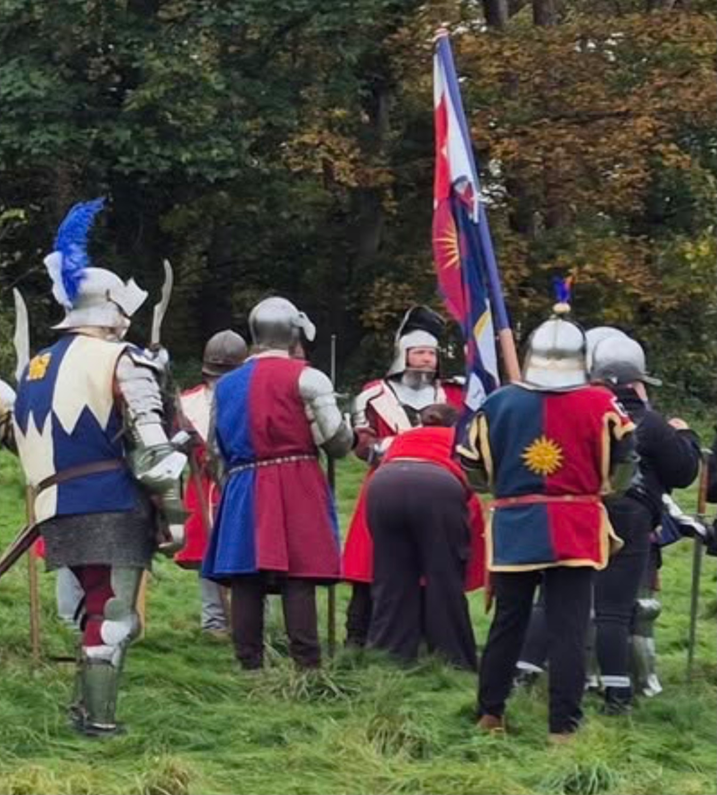
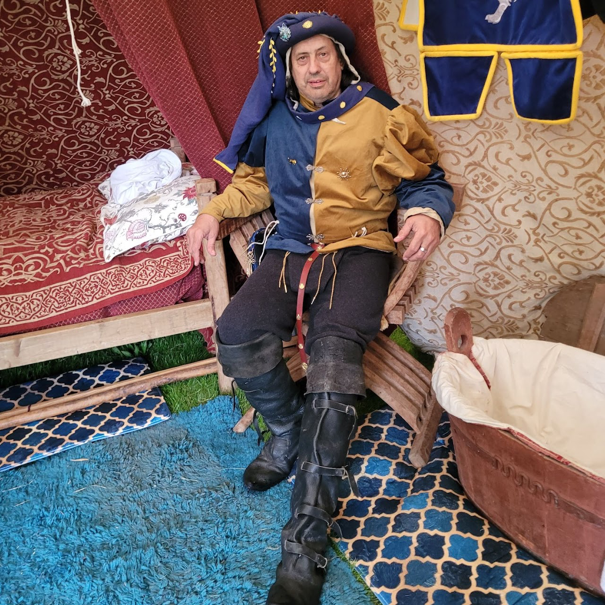
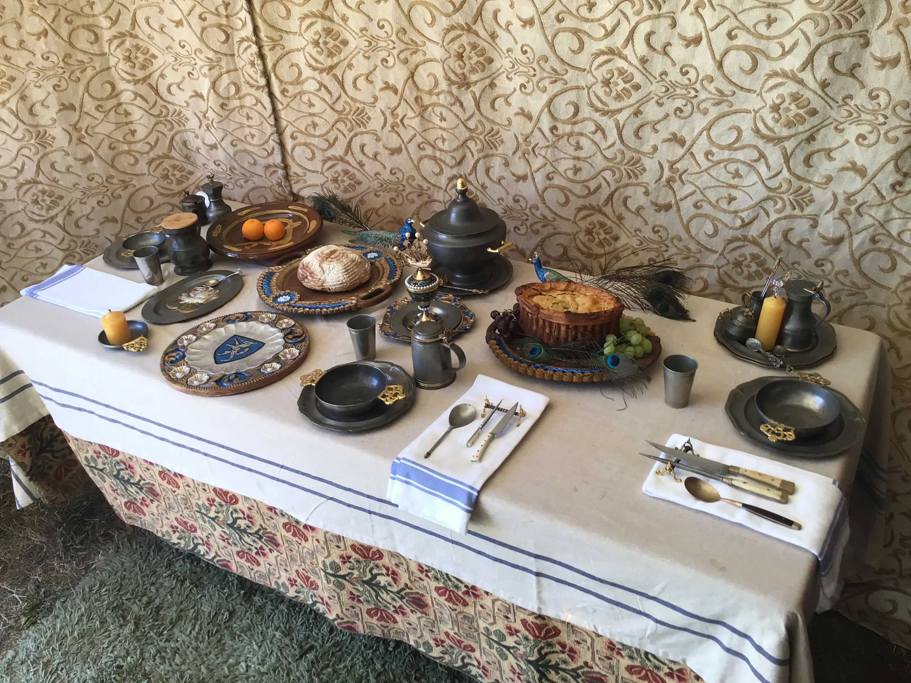
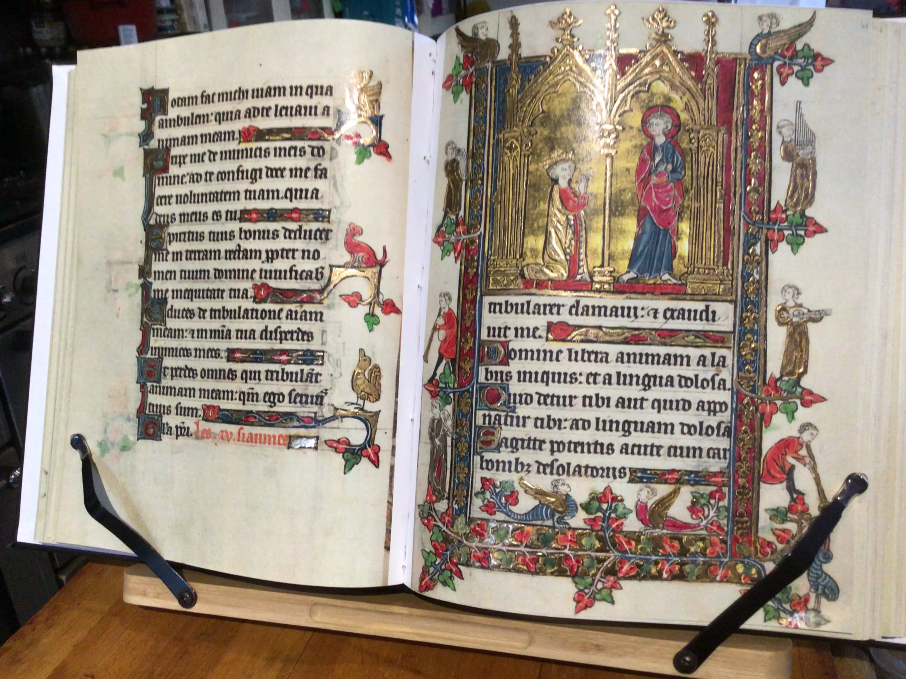
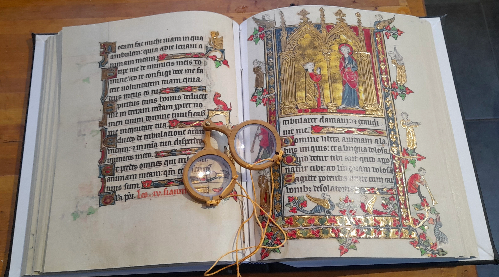
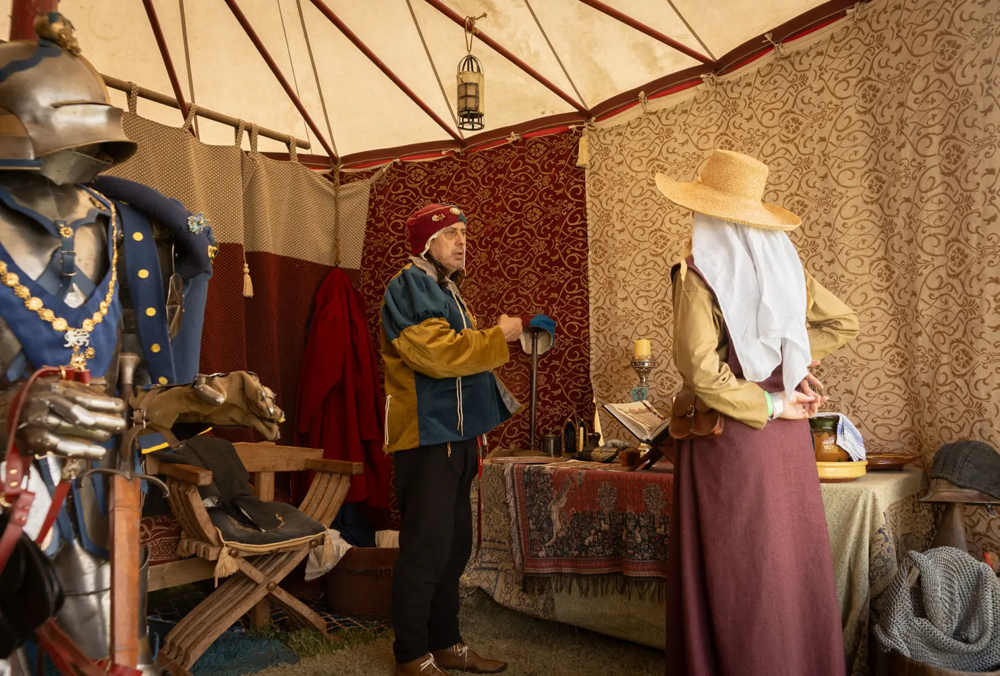
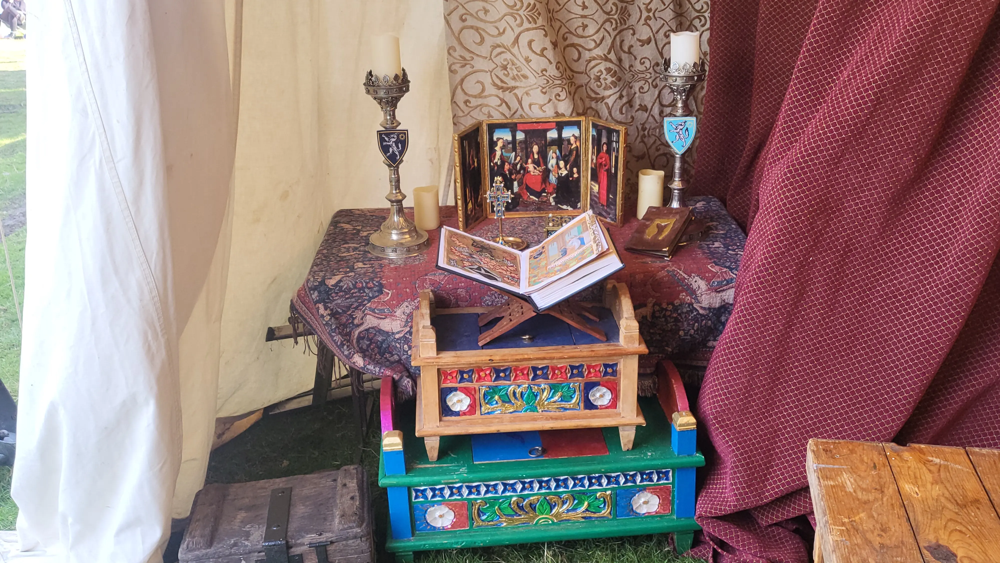
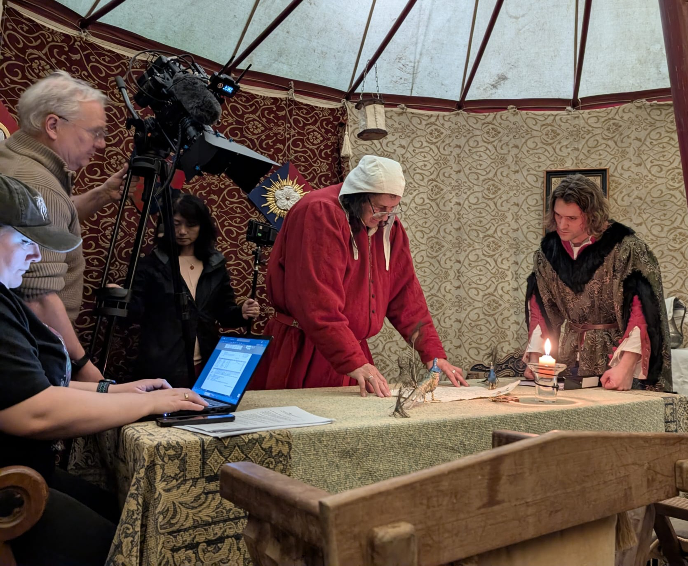
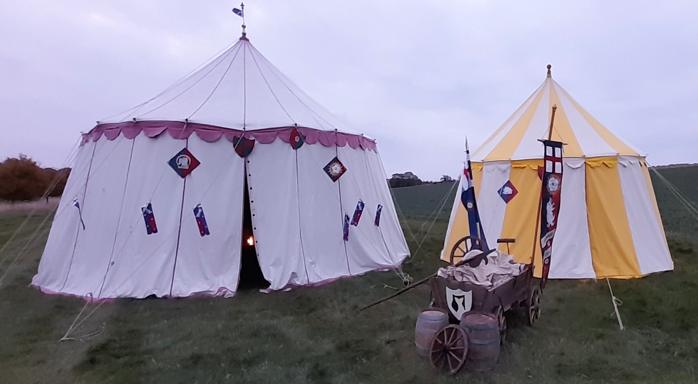

Re-enactment & living history gallery
Step into the world of Sir John Donne!
Discover medieval tents, authentic armour, and fascinating historical artefacts in our immersive gallery.


















